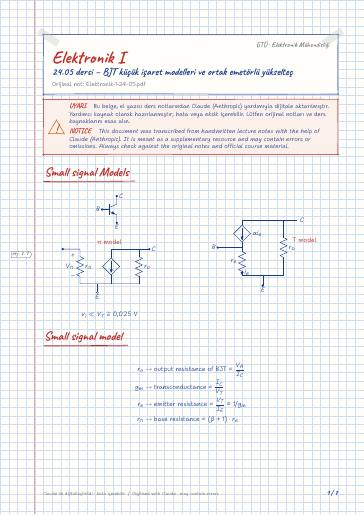

Elektronik I · Dijital ders notu
24.05 dersi – BJT küçük işaret modelleri ve ortak emetörlü yükselteç
- Ders
- Elektronik I
- Dönem
- 4. Dönem · 2022–2023 Bahar
- Biçim
- PDF · 7 sayfa · 0,2 MB · el yazısı görünümlü LaTeX
- Orijinal not
- Elektronik-1-24-05.pdf

Uyarı: Dijital notlar, el yazısı notlardan Claude (Anthropic) yardımıyla oluşturulmuştur; yardımcı kaynak olarak hazırlanmıştır ve hata içerebilir. Orijinal notları ve resmi ders kaynaklarını esas alın.
The digital notes were created from the handwritten notes with the help of Claude (Anthropic); they are meant as a supplementary resource and may contain errors. Always rely on the original notes and the official course materials.
The digital notes were created from the handwritten notes with the help of Claude (Anthropic); they are meant as a supplementary resource and may contain errors. Always rely on the original notes and the official course materials.
Bu notta neler var?
- Small signal Models
- Small signal model
- Practice
- Amplifier Topologies
- Common Emitter amplifier
- Small signal equivalent circuit
- Common Emitter amplifier with R_E
Notun metni
Düz metin olarak göster (formüller ve çizimler yoktur)
Small signal Models
Small signal model
Common Emitter with R_E
Common Emitter amplifier
C are open circuit at DC
Now all caps are short circuit
DC voltage sources are short circuit
DC current sources are ``open circuit''
Small signal equivalent circuit
High Voltage Gain -g_mR_L'
Moderate Input Resistance büyük olsun isteriz
Common Emitter amplifier with R_E